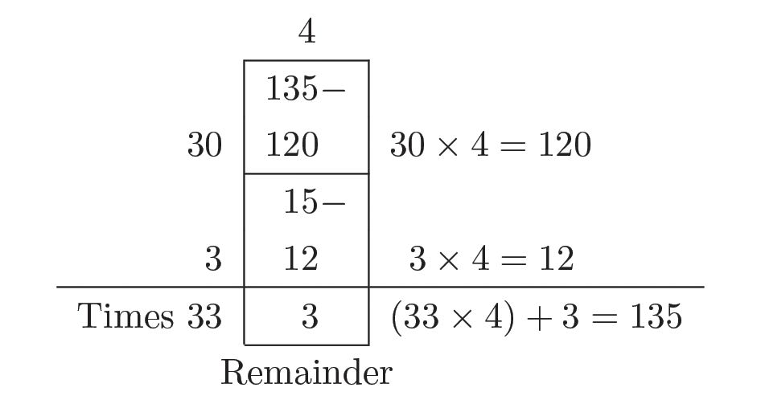

Division Methods
Division and multiplication
How do we distribute 20 pieces of candy equally among 5 kids? We need
only 5 candies to give one to each.
If one more is given to each?
Then 5 × 2 = 10 will be used; and there are some pieces left. Even giving
one more each will mean 5 × 3 = 15 used; still some left.
If we give 4 to each, all the 5 × 4 = 20 pieces would be finished.
If we forget about the candy and the kids and think just about the
numbers, the question is this:
If 20 is split into 5 equal parts, how much would be each part?
In the language of math, this is shortened further:
What is the number got on dividing 20 by 5 ?
We can shorten this by using math symbol.
What is 20 ÷ 5 ?
How did we find the answer?
If the 5 parts are
1 each, then total is 5
2 each, then total is two times of 5.
3 each, then total is three times of 5. 5 3 = 15.
4 each, then total is four times of 5.
5 2 = 10.
5 4 = 20.
So the questions on parts and division above can be rewritten as questions
on times and multiplication.
Parts and Division
Times and Multiplication
If 20 is split into 5 equal parts, how
How many times of 5 makes 20 ?
much would each part be?
What number do we get on dividing By what number should 5 be
20 by 5 ?
multiplied to get 20 ?
5 ? = 20
20 ÷ 5 = ?
Now look at this problem:
40 litres of water was filled in 8 bottles of the same size. How many
litres of water will be there in each bottle?
This can be written as ‘parts’ in ordinary language and as ‘division’ in
math language, as follows.
Parts and Division
Times and Multiplication
If 40 is split into 8 equal parts, how
much would be each part ?
What number do we get on dividing
40 by 8 ?
40 ÷ 8 = ?
Can you rewrite these in terms of times and multiplication and find the
answer?
Another problem:
6 persons equally shared 48 kilograms of rice. How many kilograms did
each get?
Write this first as a question on parts and then division, then rewrite in
terms of times and multiplication, and find the answer:
Parts and Division
Times and Multiplication
Rectangle division
Look at this problem:
A rectangle is to be made with 75 dots, 5 dots in each row. How many
rows can be made?
When one more row is added, 65 dots are left.
Instead of placing rows one by one and checking, why don’t we place
10 rows at a time and see how much is left?
How many dots are used then?
5 × 10 = 50
How many more to be placed?
75 − 50 = 25
What actually did we compute here?
75 is the 15 times of 5.
That is, 5 × 15 = 75
How do we say this in terms of parts?
If 75 is divided into parts of 5, there would be 15 parts:
This can also be stated as follows:
If 75 is divided into 5 equal parts, each part would be 15.
Money problem
An amount of 96 rupees which comprises
Let’s write our method of
computation without drawing dots
and using only numbers:
of 9 ten rupee notes and 6 one rupee coins
needs to be equally divided among 8 persons.
How will you do that?
First give one ten rupee note to each. If
the remaining note is changed to one rupee
coins, then these together with the six already
there, will make sixteen coins in all. Two
each can be distributed, to the eight persons.
All these calculations can be shown in terms
of just numbers, as below:
8
1
2
Ten
One
9
6
8
Another problem:
16
A rectangle is to be made with
96 dots, 6 dots in each row. How
many rows can be made?
16
This can be further shortened like this:
12
8 96
8
16
16
0
We can think like this
•
10 rows would use up 60 dots;
36 left
•
Since 6 × 6 = 36, we can have 6
more rows
•
Altogether, 10 + 6 = 16 rows
We can draw boxes and write the calculations like this:
We can think about the problem of dividing
1 hundred rupee note, 9 ten rupee notes and
2 one rupee coins equally among 8 persons,
in a slightly different way.
So, in all, the hundred rupee note changed
into 10 ten rupee notes and the 9 ten rupee
notes would make 19 ten rupee notes. If 2
of these are given to each, 3 notes would be
left. If these are changed to one rupee coins,
then together with the 2 coins already in
hand, there will be 32 coins. These remaining
While doing it, if we recall 8 2 = 16
and 8 20 = 160, we can reduce the
number of steps:
32 coins can be shared by giving 4 to each.
All these computations can be condensed
as before:
2
Hundred
8
4
Ten
1
One
9
2
19
2
16
3
2
32
32
0
This can be compressed further into this:
24
Let’s try changing the numbers in the
same problem.
If 3000 rupees is shared equally among
12 persons, how much will each get?
If as before, we think of each person
taking 10 rupees, 20 rupees and so on,
the total amount would be reduced by
120 rupees, 240 rupees and so on. But
these numbers are much smaller than
the total 3000.
Let’s consider each of them taking 100 rupees, 200 rupees and so on.
The total would then be reduced by 1200 rupees, 2400 rupees and so on.
So, let’s start like this:
Now there’s no enough money for each of them to take 100 rupees more.
If this amount is shared as 10 rupees, 20 rupees and so on, it would be
reduced by 120 rupees, 240 rupees and so on, as seen before.
How much money should each of them take for 600 rupees to be used
up?
So, let’s write as follows:
Here, if it’s difficult to see 12 × 50 = 600, you can repeatedly subtract
120 till all of 600 is used up.
Or, subtract 240 two times and 120 once:
Now let’s try these:
1. Total price of 7 pens of equal rate is 98 rupees. What’s the price of
a pen?
2. If 168 rupees is shared equally among 8 persons, how much will
each get?
3. The school store needs 1825 notebooks. How many packs of 25
notebooks, are to be bought?
Remainders
A small problem:
How can 20 pens be packed into packets of 5 ?
How did you find the answer?
You have seen how this can be written in two ways:
20 ÷ 5 = 4
5 × 4 = 20
How can 21 pens be packed into packets of 5 ?
There will be 4 packets and one pen left over.
In the language of math, we say it like this
21 divided by 5 gives quotient 4 and remainder 1
In this, the quotient shows the number of parts, with 5 in each, into
which we can split 21 and the remainder is the number left over.
This we can write in terms of multiplication also:
21 = (5 × 4) + 1
Like this,
22 = (5 × 4) + 2
23 = (5 × 4) + 3
24 = (5 × 4) + 4
48
Page 49
Figure fig_ch04_p049_01 (Page 49)

Figure fig_ch04_p049_02 (Page 49)
Division Methods
Can we write other numbers also as so many times 5 and a remainder?
What about 20 ?
20 = (5 × 4) + 0
This means, 20 divided by 5 gives quotient 4 and remainder 0
Can we write numbers less than 5 like this ?
For example, if we take 4,
4 = (5 × 0) + 4
That is, 4 divided by 5 gives quotient 0, remainder 4 itself.
Thus any number can be written as so many times 5 and a remainder;
and the remainder in all cases will be one of the numbers 0, 1, 2, 3 or 4.
What about numbers other than 5 ?
Let’s take 4:
0 = (4 × 0) + 0
4 = (4 × 1) + 0
8 = (4 2) + 0
1 = (4 × 0) + 1
5 = (4 × 1) + 1
9 = (4 × 2) + 1
2 = (4 × 0) + 2
6 = (4 × 1) + 2
10 = (4 × 2) + 2
3 = (4 × 0) + 3
7= (4 × 1) + 3
11 = (4 × 2) + 3
We can continue this as much as we wish. For example, taking 135, we
have
So, any number can be written as so many times a number other than
zero, and a remainder; and the remainder will be less than the second
number:
Now let’s try these problems:
1. What are the numbers which leave remainder 0 on division by 2 ?
And those that leave remainder 1 ?
2. What are the possible remainders on dividing a number by 3 ? Write
the pattern of numbers leaving the same remainder for each of these.
3. See the way numbers are arranged below:
0
1
2
3
4
5
6
7
8
9
10
11
12
13
14
15
16
17
18
19
i. Is there any relation between the quotients on dividing the
numbers in any one row by 5 ? And the remainders?
ii. What if numbers in any one column are divided by 5 ?
iii. What are the first and last numbers of the 10th row?
iv. What is the 4th number in the 12th row?
v. Which column and row does the number 123 belong to?
4. Write each of the numbers as certain times 9 and a remainder
(a) 11
(b) 111
(c) 1111
i. Can you guess how 1111 is written like this? Check your guess
by actual division.
ii. Write out this number pattern.
5. Write each of the numbers as certain times 8 and a remainder
i.
ii.
(a) 9
(b) 98
(c) 987
Can you guess how 9876 is written like this? Check your guess
by actual division.
Write out this number pattern.